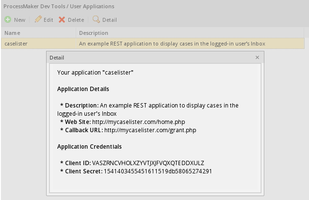
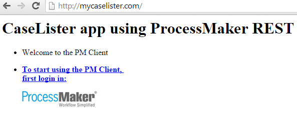
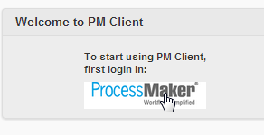
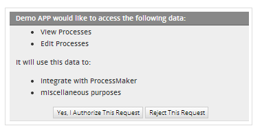
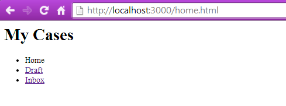
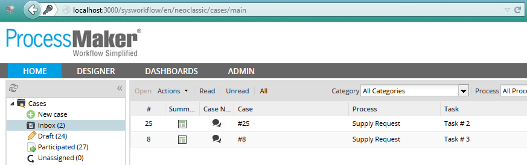

- Overview
- Requirements
- Setup the server
- Registering the application
- Create the caselister files
- app-data.json: Application credentials
- home.html: Initial Page
- access.html: Request application authorization
- grant.php: Obtain access token
- cases.html: Display case folders
- todo-list.html: List Inbox cases
- Accessing the external application
- Getting the access token using the Refresh Code
Overview
The following example REST application named "caselister" creates a web page which uses the cases endpoint in the ProcessMaker REST API to show how to get a list of the ProcessMaker cases found in the Inbox for a logged-in user.
Requirements
- ProcessMaker v 2.8 or later
- A server running Apache or a similar web server
- If using a Linux server, root privileges are needed in order to create/copy files inside the Apache public directory which is often located at /var/www or configure Apache to use another directory. If using a Windows server, administrator privileges may be needed to edit the Apache configuration files if located under the Program Files directory.
Setup the server
In this example, a ProcessMaker server is installed at http://mypmserver.com and the example "caselister" application is installed on a separate server at http://mycaselister.com, which will use the ProcessMaker REST API.
The "caselister" application, however, can be run on the same server running ProcessMaker. The easiest way to do this is to create a caselister directory at <PROCESSMAKER-DIRECTORY>/workflow/public_html/caselister which will contain application's code. Then the "caselister" application can be accessed from the web browser at the address:
If using Linux/UNIX, make sure to make the caselister directory is world readable and executable and all files inside it are world readable.
The second way to run the "caselister" application on the same server as ProcessMaker is to add another port to the Apache web server. For example, create the following file named caselister.conf to run the "caselister" application on port 8000:
Change /var/www/caselister to the path where the caselister code is located.
Then add the caselister.conf file to the directory of Apache sites. This location depends on your server:
- RedHat/CentOS/Fedora:
- /etc/httpd/conf.d/caselister.conf
- Debian/Ubuntu/Mint:
- /etc/apache2/sites-available/caselister.conf
- Then issue the following command as root or with
sudo:a2ensite caselister
- SuSE/OpenSUSE:
- /etc/apache2/conf.d/caselister.conf
- Windows Vista/7/8/Server 2008 (with Automatic ProcessMaker Installer):
- C:\Users\USERNAME\AppData\Roaming\ProcessMaker-X_X_X\processmaker\apache\conf\caselister.conf
- Then in the apache\conf\httpd.conf file, add the line:
Include "conf/caselister.conf"
- Windows XP/Server 2003 (with Automatic ProcessMaker Installer):
- C:\Program Files\ProcessMaker-X_X_X\processmaker\apache\conf\caselister.conf
- Then in the apache\conf\httpd.conf file, add the line:
Include "conf/caselister.conf"
Finally restart the Apache server to use the new web site.
Registering the application
First register the application in ProcessMaker, in order to request the access token, which in this example will be used to obtain access to the ProcessMaker Inbox list. Login to ProcessMaker as any user, then redirect the web browser to the following URL:
Click New and fill out the following form to register a new application:

- Name: Enter a name to identify the application.
- Description: Enter a description of the application.
- Web Site: Enter a URL for the application's home page.
- Callback URL: Enter the URL for the code to get the access token. The application will be redirected to this location after calling the
{workspace}/oauth2/authorizeendpoint.
When done filling out the form, click on Save Changes. Once the application has been successfully registered, its credentials are generated which are used by the external application to obtain access to ProcessMaker:

Copy the Client ID and Client secret which will be used by the external application to obtain authorization from ProcessMaker:
Client secret: 1541403455451611519db58065274291
Create the caselister files
Create a directory named caselister in the server in a path which is web accessible, such as /var/www/caselister. Then create the following files inside the caselister folder, which will hold the code for the caselister and store the OAuth 2.0 credentials which are needed to obtain the access token:
app-data.json: The credentials to obtain the access token.home.html: The initial page with a link to go to the access.html page and start authentication.access.html: The web page to authenticate the application.grant.php: The PHP code to get the access token.cases.html: Displays links to the user's Inbox and Draft cases.todo-list.html: Displays a list of cases in the user's Inbox.
app-data.json: Application credentials
Create a new file named app-data.json inside the caselister folder to hold the credentials for the registered REST application.
"client_id":"VASZRNCVHOLXZYVTJXJFVQXQTEDDXULZ",
"client_secret":"1541403455451611519db58065274291"
}
This file will later be overwritten by code in grant.php to also include the access_token which is a code used to access ProcessMaker REST endpoints and a refresh_token which is used to acquire another access token, when the current access token expires.
home.html: Initial Page
Create the caselister/home.html file, which is the first page in the application. It contains a link to go to the access.html page to initiate authorization, so the caselister application can access the ProcessMaker REST.
<head>
<meta charset="utf-8">
<meta http-equiv="X-UA-Compatible" content="IE=edge">
<meta name="viewport" content="width=device-width, initial-scale=1">
</head>
<body>
<div data-role="page">
<div data-role="header" data-position="fixed">
<h1>CaseLister app using ProcessMaker REST</h1>
</div>
<div role="main" class="ui-content">
<ul data-role="listview" data-inset="true">
<li data-role="list-divider">Welcome to the PM Client</li>
<li>
<a href="access.html">
<p><strong>To start using the PM Client, <br/>first login in:</strong></p>
<img src="http://mypmserver.com/images/processmaker.logo.png" width="150" />
</a>
</li>
</ul>
</div>
<div data-role="footer" data-position="fixed">
</div>
</div>
</body>
</html>
access.html: Request application authorization
After registering the application, it is necessary to request an authorization to get access to the list of cases in the ProcessMaker Inbox. Create the caselister/access.html file containing the following code:
<head>
<meta charset="utf-8">
<meta http-equiv="X-UA-Compatible" content="IE=edge">
<meta name="viewport" content="width=device-width, initial-scale=1">
</head>
<body>
<div data-role="page">
<div data-role="header" data-position="fixed">
<h1>PM Login</h1>
</div>
<div role="main" class="ui-content">
<iframe src="http://mypmserver.com/workflow/oauth2/authorize?response_type=code&client_id=VASZRNCVHOLXZYVTJXJFVQXQTEDDXULZ&scope=*"
frameborder="0" height="500"></iframe>
</div>
</div>
</body>
</html>
Change the direction for the iframe to your server and set its client_id for the caselister application, so that it can get authorization to access ProcessMaker.
grant.php: Obtain access token
In order to get the access token, Create the caselister/grant.php file with the following code:
if (! empty($_GET['error'])) {
print_r($_GET);
die();
}
$apiServer = "http://mypmserver.com/api/1.0/workflow";
$endpoint = "/token";
$appData = json_decode(file_get_contents("app-data.json"), true);
$postParams = array(
'grant_type' => 'authorization_code',
'code' => $_GET['code']
);
$ch = curl_init($apiServer . $endpoint);
curl_setopt($ch, CURLOPT_HEADER, false);
curl_setopt($ch, CURLOPT_USERPWD, $appData['client_id'] . ":" . $appData['client_secret']);
curl_setopt($ch, CURLOPT_TIMEOUT, 30);
curl_setopt($ch, CURLOPT_POST, 1);
curl_setopt($ch, CURLOPT_POSTFIELDS, $postParams);
curl_setopt($ch, CURLOPT_RETURNTRANSFER, true);
curl_setopt($ch, CURLOPT_USERAGENT,'Mozilla/5.0 (Windows; U; Windows NT 5.1; en-US; rv:1.8.1.13) Gecko/20080311 Firefox/2.0.0.13');
$result = curl_exec($ch);
$data = json_decode($result, true);
curl_close($ch);
if (isset($data["access_token"])) {
file_put_contents("app-data.json", json_encode(array_merge($appData, $data)));
header("location: cases.html");
} else {
print ("<br>\n<font color=red>No access token returned from $endpoint</font><br>\n" .
"Check the direction, the Client ID '{$appData['client_id']}' and Client Secret '{$appData['client_secret']}'.");
}
?>
Where:
$apiServer: Includes the server where ProcessMaker is installed as well as the workspace where the cases from the Inbox will be obtained. In this example, the default workflow workspace is used.
$endpoint: Includes token at the end of the URL in order to get the access token.
$appData: This variable stores the content from the app-data.json file, which stores the authorization credentials, so that the application can access ProcessMaker's data.
$postParamsThe post parameters sent to the ProcessMaker API, including the grant-type which is set toauthorization_codeand the code which is the application's authorization code.
Finally if the access token is generated successfully, content like the following will automatically be written to the app-data.json file:
"client_id":"VXQJYHYXPESMERDGJDOPKNDBANRMBDNW",
"client_secret":"716207107529ddc3e513259060387580",
"access_token":"eecc27bf33eda39abf3f985f819974df9e113449",
"expires_in":3600,
"token_type":"bearer",
"scope":"*",
"refresh_token":"1fac3000e826c6cde6e4d729a129ae9922bd8850"
}
In this example, the access_token was successfully granted, which can be used to access ProcessMaker REST endpoints until the access token expires. expires_in lists in how many seconds the access token will expire. The scope is set to "*", meaning all scopes. Currently the scope is not used by ProcessMaker REST, but future versions may offer scopes to limit access to certain parts of the REST API, such as read-only cases endpoints or administration endpoints. If the token expires, the refresh_token can be used to request a new access token.
cases.html: Display case folders
Then, create the caselister/cases.html file which displays links to see the Inbox and Draft cases for the logged-in user:
<head>
<meta charset="utf-8">
<meta http-equiv="X-UA-Compatible" content="IE=edge">
<meta name="viewport" content="width=device-width, initial-scale=1">
</head>
<body>
<div data-role="page">
<div data-role="header" data-position="fixed">
<h1>My Cases</h1>
</div>
<div role="main" class="ui-content">
<ul data-role="listview" data-inset="false" data-divider-theme="a">
<li data-role="list-divider">Home</li>
<li><a href="todo-list.html">Inbox</a></li>
<li><a href="#">Drafts</a></li>
</ul>
</div>
<div data-role="footer" data-position="fixed">
</div>
</div>
</body>
</html>
Look at the line:
<li><a href="todo-list.html">Inbox</a></li>
When clicking on the Inbox option, it will redirect to the todo-list.html file, where all cases will be listed.
todo-list.html: List Inbox cases
Once the request has been accepted, this page will display the Inbox, which is a list of TO DO cases which are assigned to the logged-in user. Create the caselister/todo-list.html file with the following content:
<head>
<meta charset="utf-8">
<meta http-equiv="X-UA-Compatible" content="IE=edge">
<meta name="viewport" content="width=device-width, initial-scale=1">
<script src="http://code.jquery.com/jquery-1.11.1.min.js"></script>
</head>
<body>
<div data-role="page">
<div data-role="header" data-position="fixed">
<h1>My Cases</h1>
</div>
<div role="main" class="ui-content">
<ul id="todo-list" data-role="listview" data-inset="false" data-divider-theme="a">
<li data-role="list-divider">TO DO</li>
</ul>
</div>
<div data-role="footer" data-position="fixed">
</div>
<script>
$(document).ready( function() {
$.get("app-data.json", function(appdata) {
var apiserver = 'http://mypmserver.com/api/1.0/workflow';
var endpoint = '/cases';
$.ajax({
url: apiserver + endpoint,
type: "GET",
contentType: false,
beforeSend: function(request) {
request.setRequestHeader("Authorization", "Bearer " + appdata.access_token);
},
success: function (data) {
console.log(data);
$.each(data, function(index, record) {
$('#todo-list').append('<li><a href="#" class="ui-btn ui-btn-icon-right ui-icon-carat-r">Case #' +
record.app_number + '</b> - ' + record.app_tas_title + '</a></li>');
});
}
});
},
'json'
);
});
</script>
</div>
</body>
</html>
Make sure to change the value of the apiserver variable to the direction of your ProcessMaker server.
This code downloads JQuery library, which contains a number of useful JavaScript functions for AJAX calls. When the page is done loading, it uses then jQuery.get() function to download the contents of the app-data.json file, which contains the access token and is necessary to access the ProcessMaker REST. Note that $ is an alias for jQuery.
Then, jQuery's $.ajax() function calls the cases list endpoint at http://{pm-server}/api/1.0/{workspace}/cases to retrieve a list of TO DO cases for the logged-in user. If the TO DO list is successfully returned, the jQuery.each() function iterates through the list and prints each case number and its current task title.
Accessing the external application
Once all files are configured correctly, open a web browser and enter the address of the caselister application:
The following page will display:

If no user is currently logged into ProcessMaker, then request an authorization to have access to that page:

-
Note: File modified: access.html
Login to ProcessMaker and you will be redirected to the authorization page. Click on the section where ProcessMaker logo is:

Authorize the request by clicking on Yes, I Authorize This Request:

The cases list will be displayed:

-
Note: File modified: home.html
Click on Inbox option to list all available cases:

Remember that those cases are coming from the ProcessMaker instance defined in the app.js file. By going to that ProcessMaker instance, the same cases as we were listed in the application, must be listed:

Getting the access token using the Refresh Code
When the access token expires it is required to obtain a new one.